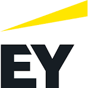
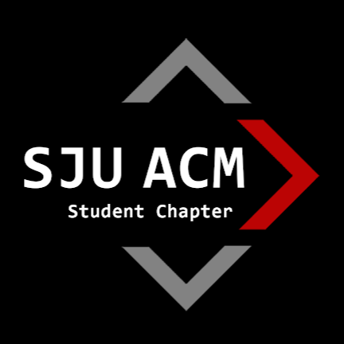
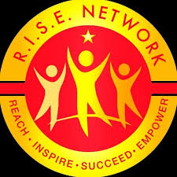
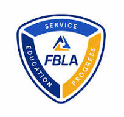

Hi, I'm Tomas!
I'm an aspiring full-stack engineer based in New York City.
My Story
Born in the Dominican Republic and raised in New York City, my journey has been one of continuous growth and learning. As a Fast Track B.S./M.S. Computer Science student at St. John's University, I've embraced both academic challenges and leadership opportunities, including serving as President of the SJU ACM Student Chapter. As of now, I am a Launch National Technology Internship at Ernst & Young (EY), which significantly enhanced both my business acumen and technical skills. This experience, combined with my academic pursuits, has strengthened my foundation in technology and sharpened my professional capabilities. Outside of my career aspirations, I value family, faith in Jesus Christ, and community, creating a well-rounded perspective that informs my approach to technology and life.

Skills
Programming Languages
Proficient in multiple languages, enabling versatile development across platforms and paradigms.
- Python: Data analysis, web development, automation
- Java: Object-oriented programming
- JavaScript: Front-end and full-stack web development
Front-end Technologies
Experienced in creating responsive and interactive user interfaces.
- HTML5 and CSS3: Structure and styling
- CSS3 Frameworks: SASS, Bootstrap, Tailwind (learning)
- Modern JavaScript frameworks: React, jQuery, Redux
Back-end Frameworks
Building robust and scalable server-side applications.
- Spring Boot: Java-based microservices
- Flask: Python web applications
- RESTful API design and implementation
Cloud Services
Exploring and implementing cloud-native solutions.
- AWS: EC2, S3, Lambda
- Google Cloud Platform: App Engine, Cloud Functions
- Azure: Virtual Machines, Azure Functions
Version Control
Proficient in collaborative development and code management.
- Git: Branching, merging, pull requests
- GitHub: Project management, issue tracking
- CI/CD pipelines integration
AI/ML
Exploring and integrating artificial intelligence in software development.
- Large Language Models (LLMs): GPT-4o, Gemini, Claude
- AI APIs: OpenAI, Open Router
- Machine Learning basics: TensorFlow, PyTorch (learning)
Projects
Codetionary
A Discord Bot that helps you learn new coding concepts and terms.
- Python, Discord API, MythoMist 7B LLM
- Led team of 4 to win 1st Place at SJU ACM x Headstarter AI Hackathon
- Deployed across servers with 1,000+ users, receiving positive feedback
ConagraGPT
An award-winning custom GPT solution designed for Conagra Brands to revolutionize market research and product development.
- Leveraged OpenAI's GPT platform for trend analysis and product ideation
- Secured 3rd Place in FBLA National Leadership Conference Tech & CompSci Case Competition
- Addresses food trends, nutritional needs, and market gap identification for a Fortune 500 company
Baseball Buddy
Your ultimate companion for all things baseball on Discord! Packed with various fun and interactive slash commands to elevate your baseball fandom.
- Python, Discord API, GIPHY API, Tenor API, Google Gemini
- Utilizes Python third-party library "pybaseball" for comprehensive baseball data
- Deployed across multiple servers with 1000+ total users
Experience

Ernst & Young, LLP (EY)
Position: Launch National Technology
Intern
Duration: June - August 2024
During my internship at EY, I had the opportunity to work on cutting-edge technology projects and gain valuable industry experience. My responsibilities included:
- Participating in critical business, technology, and AI initiatives, including firm-wide orientation and specific training
- Collaborating with cross-functional teams to develop innovative solutions for clients
- Enhancing business acumen through exposure to various client projects and industry-specific challenges
- Building relationships with colleagues and mentors, embracing a diverse and inclusive culture
- Utilizing learning and technology resources to enhance professional knowledge and define career goals
Education
St. John's University
Fast Track B.S./M.S. in Computer Science
Expected Graduation: May 2026/May 2027
Leadership Positions & Experiences
-  President - SJU ACM Student Chapter
-  Network Leader & Mentor - SJU R.I.S.E. Network
-  Competitor - SJU FBLA Student Chapter
Coursework
Gallery

{kind=link}
{kind=link}
{kind=link}
{kind=link}
Get in touch
Let's connect! Whether you have a project in mind, a question about my work, or just want to say hello, I'm always eager to hear from you. Feel free to reach out using the form below through any of my contact details.
© Tomas J. Santos Yciano. 2024 All rights reserved. Design:
HTML5 UP.